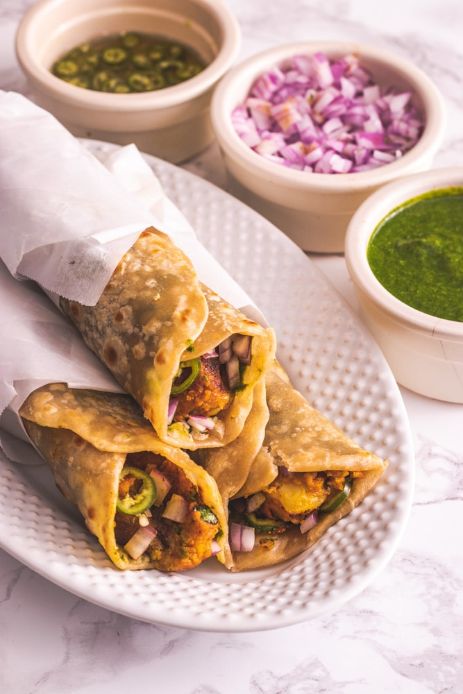

⏳ 25 mins
🍽️ Serves: 2
🌶️ Medium
🥦 Vegetarian
Ingredients
- 2 rotis (flatbreads)
- 2 boiled potatoes (mashed)
- 1/2 cup chopped onions
- 1 tsp chaat masala
- 1/2 tsp red chili powder
- 1/4 cup grated cheese
- 1 tbsp mint chutney
- 1 tbsp tomato ketchup
Steps
- Mix mashed potatoes, chaat masala, and red chili powder.
- Spread mint chutney on a roti and place the potato mixture in the center.
- Add onions, grated cheese, and roll tightly.
- Toast on a pan until golden and serve hot with ketchup.
FAQs
Can I add chicken?
Yes! Replace potatoes with grilled chicken
How do I keep the roll from breaking?
Use rotis and avoid overfilling.